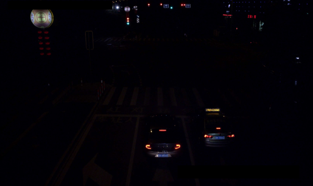

补光问题
典型场景为夜间无光或少光环境，如
图1
所示。
图1
夜间无光或少光环境

调试推荐：
此时需要调节补光灯的配置参数，智能交通摄像机内置三个补光灯：
距离安装点位15-20m处，主要调节补光灯IO1，根据实际情况调整其亮度大小；
距离安装点位20-30m处，主要调节补光灯IO2，根据实际情况调整其亮度大小；
距离安装点位30m及以上位置，主要调节补光灯IO3，根据实际情况调整其亮度大小；
若是画面中心偏暗，则主要调节补光灯IO3的亮度大小；若是画面四周较暗，则主要调节IO1和IO2的亮度大小。